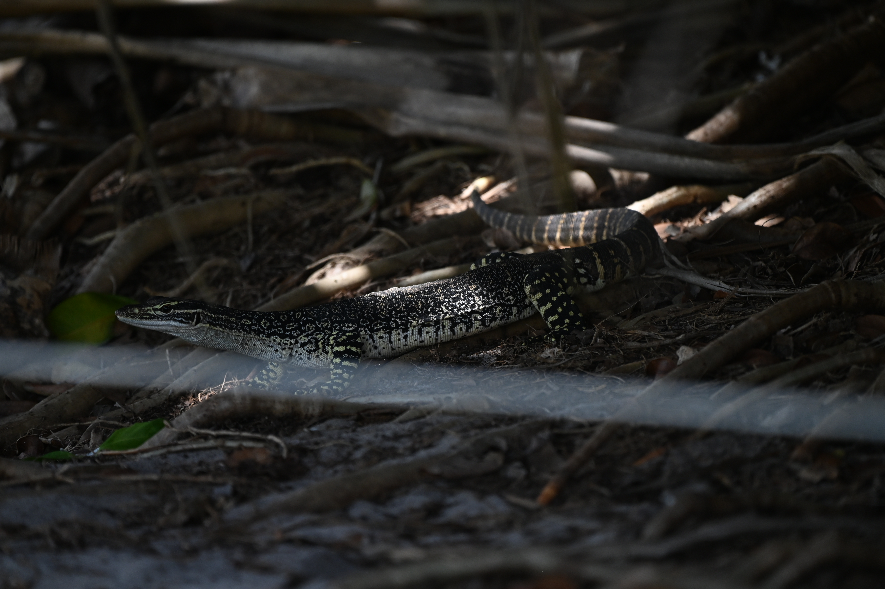
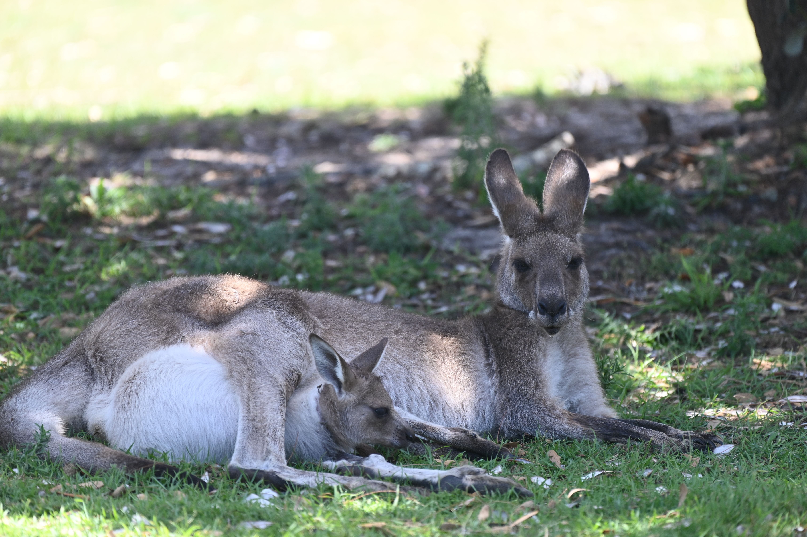
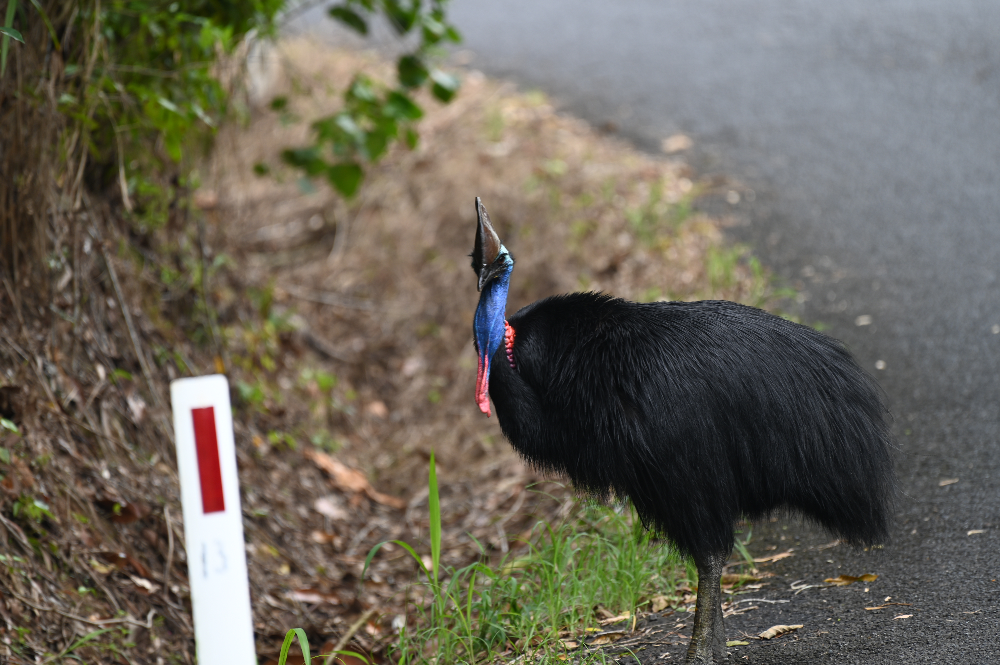

Wildlife of Australia
Coast
Saltwater Crcodile

Description
The Saltwater Crocodile is Australia's biggest native reptile and a suprisingly dangerous one too. In Queensland, you'll see many beaches and rives closed to swimming because of these guys. They view humans as potential prey items and should not be trifled with. I personally took a riverbpat tour to see them up in Cairns and that is one of the safest and mre reliable ways to see them.
Habitat
Saltwater crocodiles hunt and live in the coastal ocean and in eastuaries and rives. They hunt mainly fish but will also eat larger prey that gets close enough. They're ambush prdators so even if you don't see one in the water, it might still be there anyway waiting for prey to get close.
Conservation
The Saltwater corcodile is mainly threatened by habitat loss and retaliator killing. The best thing you can do for them if you're in the area or lookign for them is to follow local guidelines and don't swim where they tell you not too. If ou get injured or killed by a crocodile, it can result in the lcoal population getting hunted out.
Description
The Sand Goanna is a species of montior lizard closely related to the Komodo Dragon. it is also known as the Sand Monitor Lizard and unsuprisingly is found in sandy envionments. Sand Goanna's are immune to many types of vnomous snake venom due to their diet consisting of insects, lizards and snakes. The distinct black and and pale spotty patterning makes them supriisngly difficult to spot in underbush as it blends in well with dappling effect of leaves.
Habitat
The Sand Goanna is usally found in inland deserts and sandy coasts like the one we saw here. They make large burrows in the sand and live solitary lives. Sand Goannas are usally found out during the day so keep an eye out in the sand or underbursh if you're at some of these beaches in Australia at some point.
Conservation
Sand Goanna faces some local pressures from invasive predators competing with it and habitat losss, but the species has a very wide range across Australia and is during overall well.
Sand Goanna

Eastern Gray Kangaroo

Description
The Eastern Kangaroo is a very cool animal that needs very little explnation thanks to its iconic nature. They travel in big herds and were very cooperative photo subjects during my time with them. When enraged, they can be dangerous with a very powerful kick, but the ones pictured here were lounging around a campsite and weren't bothered by people as long as you didn't go right up to them. An iconic must see if you're in Australia
Habitat
The Eastern Kangaroo mainly prefers grassland, but will spend time in forests. The ones we saw here were at a coastal camground and were enjoying the open grass and sparse shade. Their diet as grazers consists of almost entirely grasses.
Conservation
The Eastern Kangaroo has done extremely well with a stable population and qucik adaption to urban zones. They are very similar to white-tailed deer in the US when it comes to prescnce and abundance throughout Australia.
Forest
Description
The Red-tailed black cockatoo is one of Australia's several species of Cockatoo, it can be found in a large range across Queensland and are easily recognized by their stark black body and red-banded tail on males, and speckled balck body and lighter banded tail on females. they are prpbably my favorite species of parrot form Australia thanks to the beautiful colors and the fact the crest makes it look like a goth rockstar. This picture was of a flock of them flying among the trees and light posts on a seaside road.
Habitat
They live in primarily coastal forests and nest in the tress in large flocks. They specialize in eating the seeds of multiple local trees like Eucalyptus.
Conservation
The forest dwelling Red-tailed Black Cockatoos are currently threatened by habitat loss and competitiion with invasive species of birds for nesting spots. Logging has resulted in siginificant habitat loss for the species.
Red-tailed Black Cockatoo

Southern Cassowary

Description
The Southern Cassowary is a terrifying but beautiful flightless bird. While it is generally harmless, and the locals don't seem to be particulary worried about walking right past it, it does posses incredibly large and powerful talons so I would advise some caution. They are easily identified by being gigantic and bright blue on the head.
Habitat
They inhabit dense tropical rainforest in Australia and Papua where they eat primarily fruit. They are some of the most importnt propogators in local ecosystems making them a keystone specieis for the health of rainforest.
Conservation
They are endagnered within Australia and mainly face threats from deforestation, road mortality, and feral pigs destroying nests. Taking tropical roads in Australia slow is adivsable for this reason for both your safety and the Cassowary's.
Conservation of Listed Species
| Species: | Conservation Status: | Main Threats: | Population Size: |
| Saltwater Crocodile | Least Concern | Loss of Wetland Habitats, Conflict with people | 200,000-300,000 |
| Sand Goanna | Least Concern | Climate Change, Competition with invasive predators | No populatin estimate available |
| Eastern Gray Kangaroo | Least Concern | Habitat Loss from Urbanization, does well in rural areas and subrubs | 2 million |
| Red-tailed Black Cockatoo | Least Concern | Loss of food sources due to invasive plants | 100,00 |
| Southern Cassowary | Least Concern Globally, Endangered in Australia | Habitat Loss and Road Strikes | 20,000-50,000 |